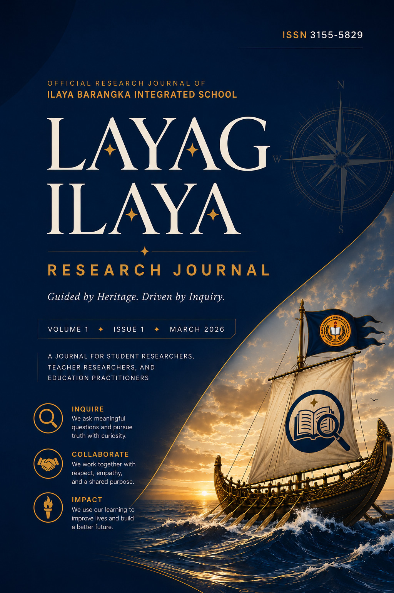

Layag Ilaya Research Journal
Guided by Heritage. Driven by Inquiry.
Nine Grade 12 research studies from Ilaya Barangka Integrated School — on waste, water, light, safety, and student life — gathered into the school’s inaugural research journal.

Paggula · Pagsugod · Paglayag
Guided by heritage, driven by inquiry
The Layag Ilaya Research Journal is the official, peer-evaluated research publication of Ilaya Barangka Integrated School in Mandaluyong City. It publishes original, school-based studies authored by Senior High School students under faculty mentorship — research that begins with real problems in the school and community and ends with evidence that can guide action.
Navigating Inquiry, Innovation, and Resilience
Volume 1 · Issue 1 · March 2026
ISSN 3155-5829 (Print)
Three parts, nine studies
Environmental Sustainability & Innovations
Trash to Treasure; Catching the Tide; Against the Clock
Part IIInfrastructure, Risk Mapping & Public Safety
Mapping the Unseen; Building to Last; Danger Zones; Safe Grounds
Part IIICampus Life & Student Well-Being
The Comfort Room Divide; The Clock is Ticking
We Brought It Home!
Two Grade 12 teams carried Project IBIS and Project SSPI to the JA Philippines × J.P. Morgan Chase CareerConnect national finals — placing 2nd and Top 10 nationwide.